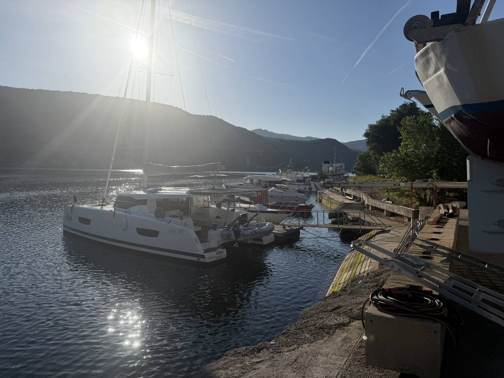
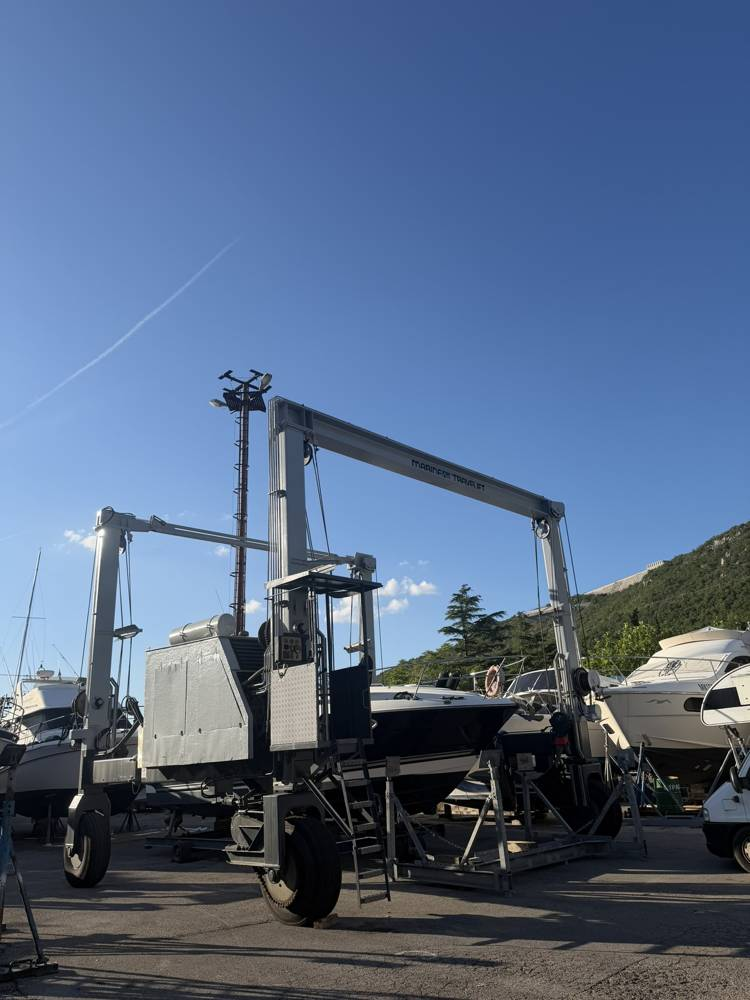
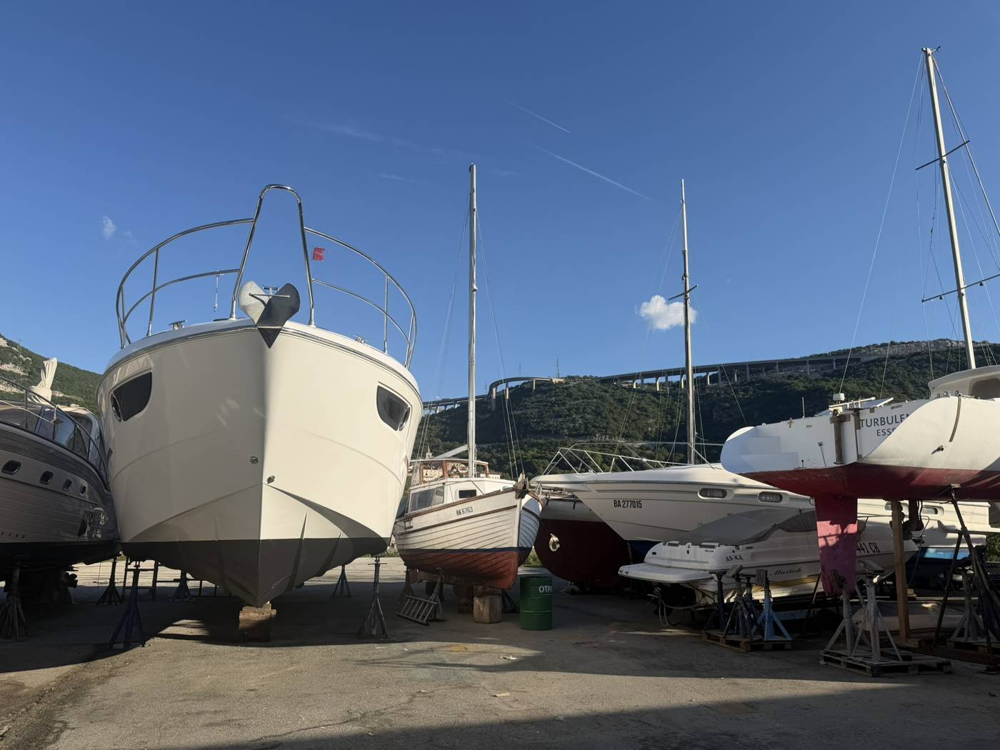
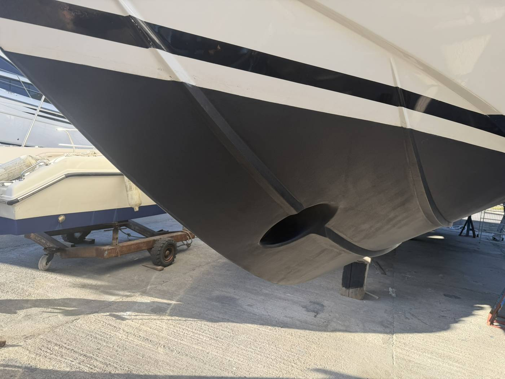
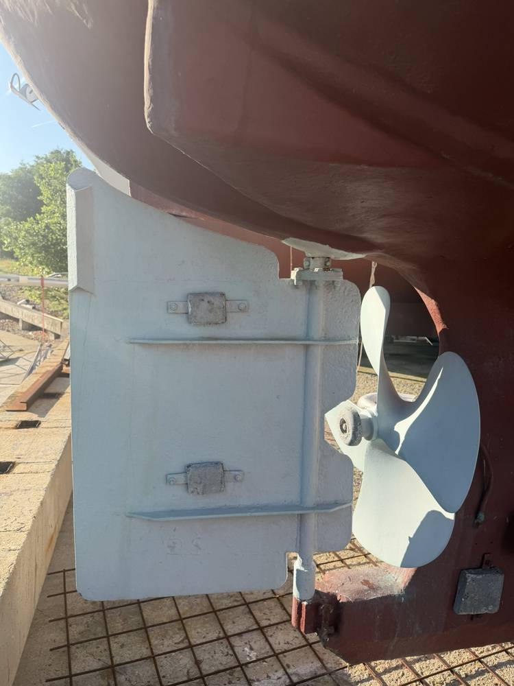
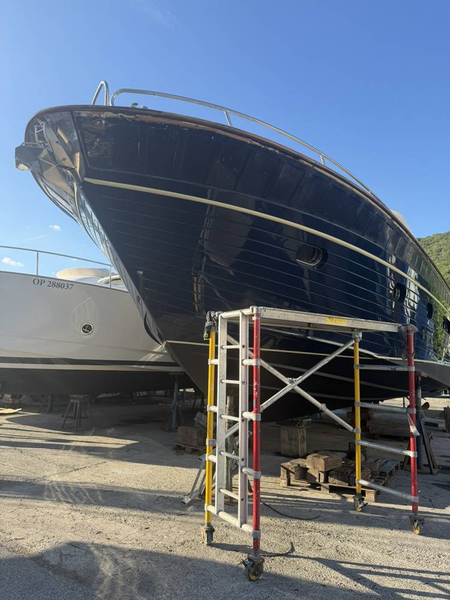
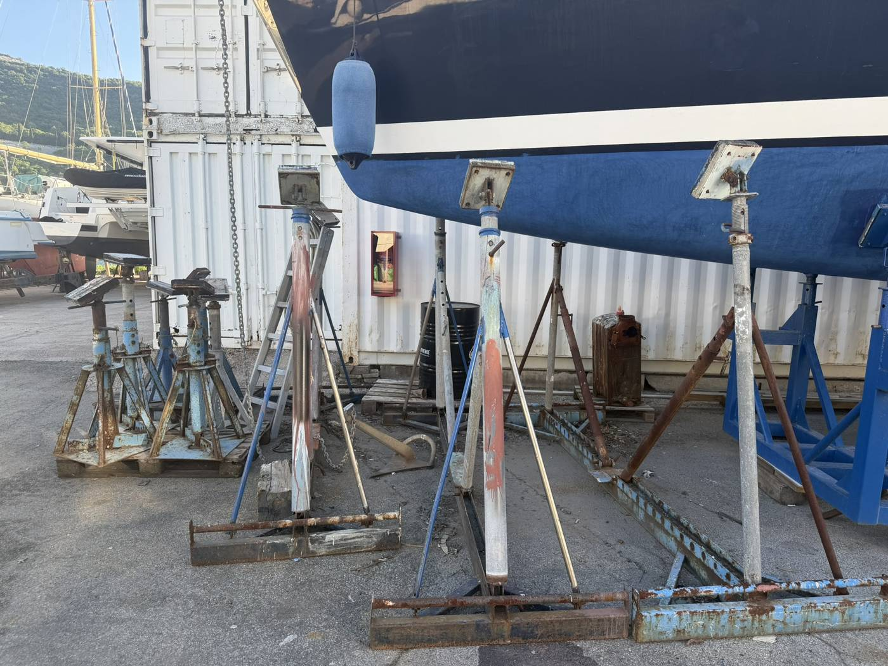
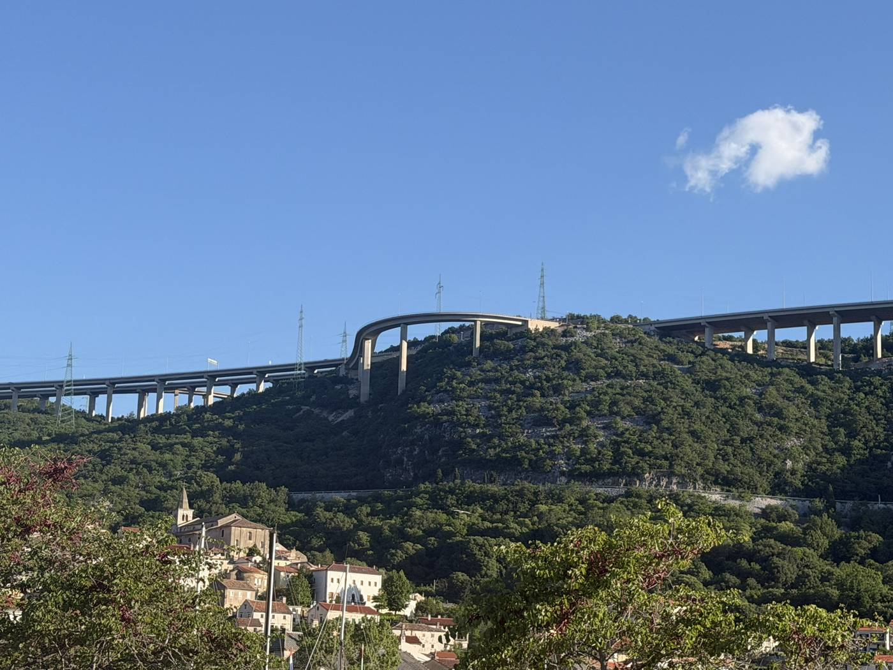
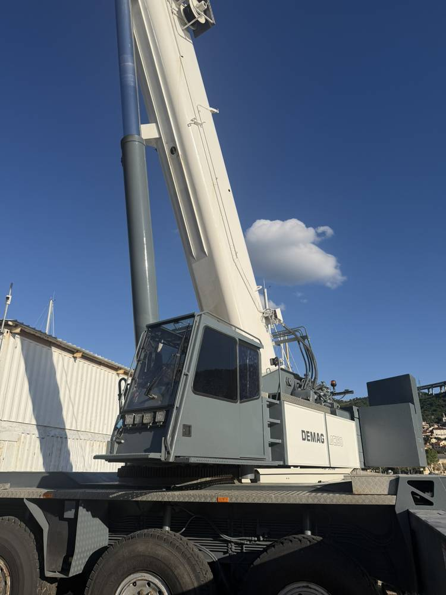
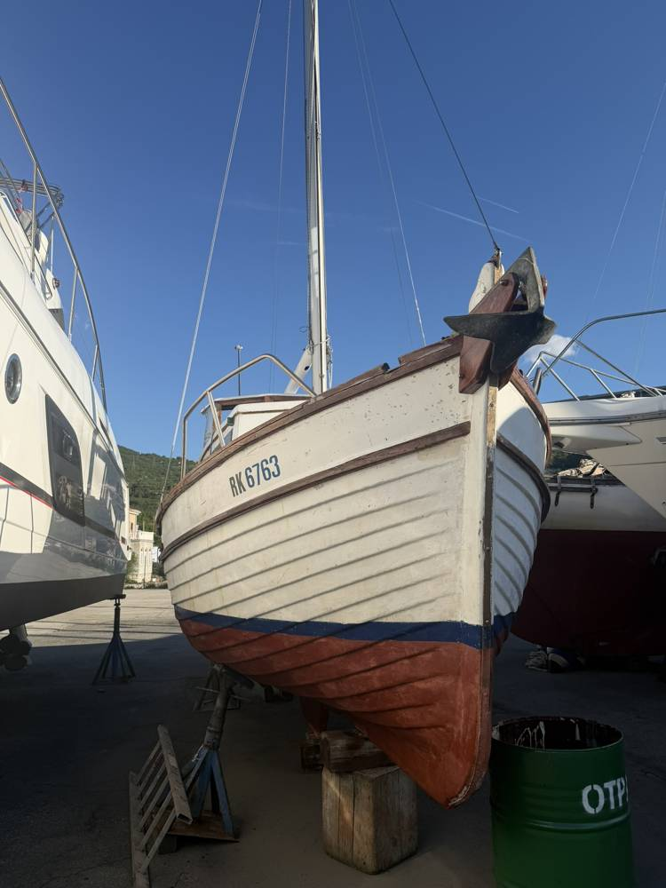

Your boat in the right hands.
Vaše plovilo u pravim rukama.
A family-run boatyard in Bakar bay, fifteen minutes from Rijeka. Haul-out, dry storage and full hull and propulsion service since 2008.
Obiteljsko servisno brodogradilište u Bakarskom zaljevu, petnaest minuta od Rijeke. Dizanje, zimovanje i kompletan servis trupa i propulzije od 2008.
ServicesUsluge
What we do
Što radimo
From a dinghy to a motor yacht: we lift it, block it, work on it and put it back in the water.
Od gumenjaka do motorne jahte: dižemo, postavljamo na stalke, radimo i vraćamo u more.

Haul-out and launch
Dizanje i spuštanje
Travel lift and mobile crane for a safe lift, from small boats to sailing and motor yachts.
Travel lift i mobilna dizalica za sigurno izvlačenje i porinuće, od malih brodica do jedrilica i motornih jahti.

Dry marina and winter storage
Suha marina i zimovanje
Fenced yard, boats on proper stands and blocking, and you can drive right up to your boat.
Ograđeno zemljište, plovila na stalcima i potkladama, autom se dolazi do samog plovila.

Underwater hull
Podvodni dio trupa
Antifouling, blasting, osmosis treatment, gelcoat repair and polishing.
Antivegetativni premaz, pjeskarenje, sanacija osmoze, gelcoat i poliranje.

Propulsion and steering
Propulzija i kormilo
Shafts, propellers, bearings, rudders, anodes and seals.
Osovine, propeleri, ležajevi, kormila, anode i brtve.

Topsides and deck
Nadgrađe i paluba
Scaffolding for work above the waterline, small repairs and season preparation.
Skele za radove iznad vodene linije, manji popravci i priprema za sezonu.

Do it yourself
Radovi u vlastitom aranžmanu
Owners are welcome to work on their own boats. Power and water at the boat.
Vlasnici mogu sami raditi na svom plovilu. Struja i voda uz plovilo.
The yardBrodogradilište
A boatyard in Bakar bay
Brodogradilište u Bakarskom zaljevu
M.A.G. is a family business run by the Sihtar family. The yard sits on the sheltered inner bay of Bakar, directly below the A7 motorway, so the drive from Rijeka, Trieste or Ljubljana ends at the pier.
M.A.G. je obiteljsko poduzeće obitelji Sihtar. Brodogradilište je u zaštićenom dijelu Bakarskog zaljeva, neposredno ispod autoceste A7, pa vožnja iz Rijeke, Trsta ili Ljubljane završava na samom gatu.
We keep the yard quiet and orderly: proper stands and blocking, clean concrete, and an owner who is on site and answers the phone.
Držimo dvorište mirnim i urednim: pravi stalci i potklade, čist beton i vlasnik koji je na licu mjesta i javlja se na telefon.
| CompanyTvrtka | M. A. G. d.o.o. |
|---|---|
| FoundedOsnovano | 8. 12. 2008., Bakar |
| ActivityDjelatnost | Repair and maintenance of ships and boatsPopravak i održavanje brodova i čamaca |
| PositionPozicija | 45°18.1′N 14°32.2′E |



ReviewsRecenzije
What owners say
Što kažu vlasnici
A place where every boater can repair their boat. The owner is very kind and accommodating.
Mjesto gdje svaki nautičar može popraviti svoju brodicu. Vlasnik je vrlo ljubazan i susretljiv.
Robert S.
Anyone who cares about their vessel will find it in the right hands here.
Tko imalo drži do svog plovila, ovdje će ga naći u pravim rukama.
Ronald R.
Lifting and launching done very professionally and correctly. The dry marina is excellent.
Dizanje i spuštanje obavljaju vrlo profesionalno i korektno. Suha marina je odlična.
Roko K.
Reviews from Google Maps. Read all reviews
Recenzije s Google Mapsa. Pročitajte sve recenzije
ContactKontakt
Book a lift
Dogovorite dizanje
- AddressAdresa
- Nautička 3
51222 Bakar, Croatia - PhoneTelefon
- +385 51 287 303
- MobileMobitel
- +385 91 546 8094
+385 91 896 0111 - Fax
- +385 51 287 304
- mag@ri.t-com.hr
Tell us the boat type, length, draft and displacement, and when you would like to come out of the water.
Navedite tip plovila, duljinu, gaz i istisninu te kada biste željeli izvući plovilo.